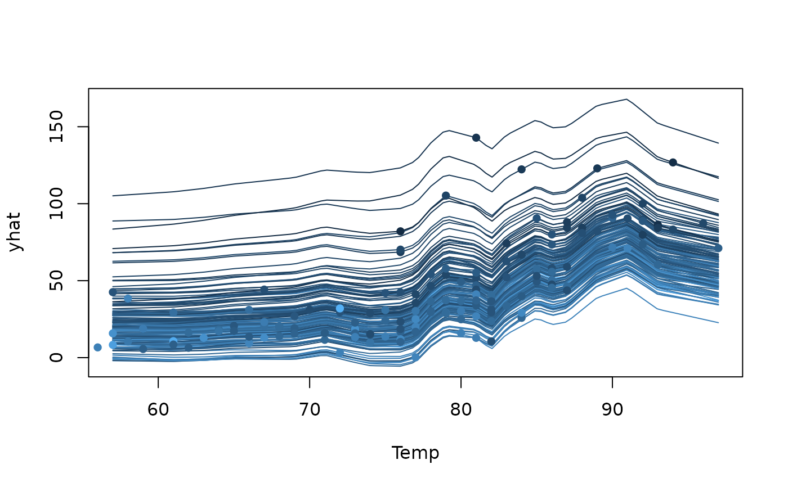
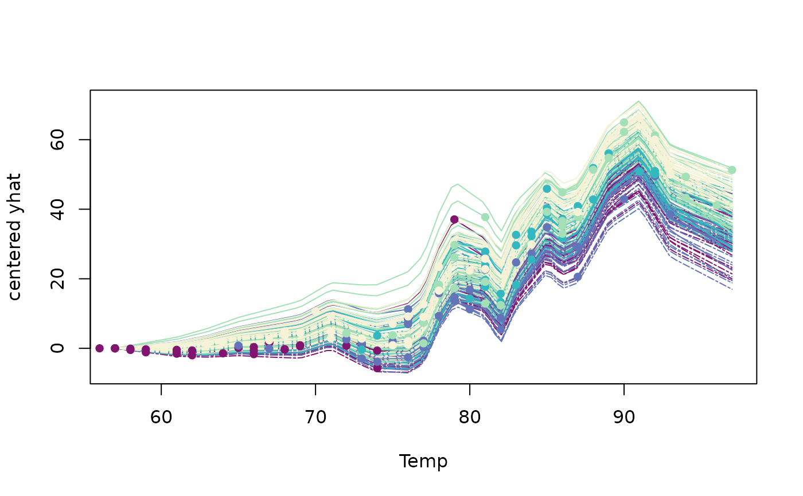

For "mid.conditional" objects, plot() visualizes Individual Conditional Expectation (ICE) curves derived from a fitted MID model.
Arguments
- x
a "mid.conditional" object to be visualized.
- type
the plotting style. One of "iceplot" or "centered".
- theme
a character string or object defining the color theme. See
color.themefor details.- term
an optional character string specifying an interaction term. If passed, the ICE curve for the specified term is plotted.
- var.alpha
a variable name or expression to map to the alpha aesthetic.
- var.color
a variable name or expression to map to the color aesthetic.
- var.linetype
a variable name or expression to map to the linetype aesthetic.
- var.linewidth
a variable name or expression to map to the linewidth aesthetic.
- reference
an integer specifying the index of the evaluation point to use as the reference for centering the c-ICE plot.
- dots
logical. If
TRUE, points representing the actual predictions for each observation are plotted.- sample
an optional vector specifying the names of observations to be plotted.
- ...
optional parameters passed on to the graphing functions.
Value
plot.mid.conditional() produces an ICE plot as a side-effect and invisibly returns the ICE matrix used for the plot.
Details
This is an S3 method for the plot() generic that produces ICE curves from a "mid.conditional" object.
ICE plots are a model-agnostic tool for visualizing how a model's prediction for a single observation changes as one feature varies.
This function plots one line for each observation in the data.
The type argument controls the visualization style:
The default, type = "iceplot", plots the row ICE curves.
The type = "centered" option creates the centered ICE (c-ICE) plot, where each curve is shifted so start at zero, which makes it easier to compare the slopes of the curves.
The var.color, var.alpha, etc., arguments allow you to map aesthetics to other variables in your data using (possibly) unquoted expressions.
Examples
data(airquality, package = "datasets")
library(midr)
mid <- interpret(Ozone ~ .^2, data = airquality, lambda = 0.1)
#> 'model' not passed: response variable in 'data' is used
ice <- mid.conditional(mid, "Temp", data = airquality)
# Create an ICE plot, coloring lines by 'Wind'
plot(ice, var.color = "Wind")

# Create a centered ICE plot, mapping color and linetype to other variables
plot(ice, type = "centered", theme = "Purple-Yellow",
var.color = factor(Month), var.linetype = Wind > 10)
